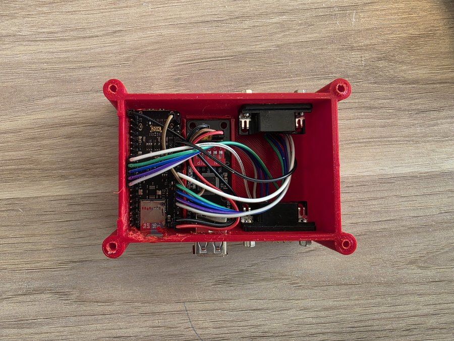

1. Overview
Tang Atari 800 turns a Sipeed Tang Nano 20K board into a complete Atari 800XL/130XE-class computer with HDMI output, SD-card disks and cartridges, and a PC link over the USB-C cable.

What the machine is
The board runs an FPGA implementation of the Atari 8-bit computers — the 800, 800XL, 65XE and 130XE family. The custom chips are all emulated in hardware: the 6502 CPU, ANTIC (display list processor), GTIA (colour and player/missile graphics), POKEY (sound, keyboard, serial I/O) and PIA (joystick ports and memory banking). The core is the Atari800_MiSTer core by Mark Watson, adapted to the Gowin FPGA on the Tang Nano 20K.
The machine is NTSC and runs at exact NTSC speed (59.94 Hz frames). It passes the ACID800 conformance suite — 57 of 57 tests — on real hardware. The default memory configuration is 128 KB, like a 130XE, and can be expanded from the menu up to 1088 KB (see RAM expansion).
What ships inside the bitstream
Everything the board needs, apart from the Atari ROMs, is contained in a single bitstream file (atari800_tn20k.fs):
- the Atari core itself (CPU, ANTIC, GTIA, POKEY, PIA, SIO);
- the HDMI video and audio output;
- the keyboard decoder and joystick inputs;
- a small management firmware that reads the SD card, serves disks and cartridges, draws the on-screen menu (OSD) and talks to the PC over USB-C. This firmware is baked into the bitstream — there is no separate firmware to flash.
What you must supply
The Atari system ROMs are not included. You need two files in the root of a FAT32 micro-SD card:
| File | Size | What it is |
|---|---|---|
ATARIXL.ROM | exactly 16384 bytes | Atari XL/XE operating system ROM |
BASIC.ROM | exactly 8192 bytes | Atari BASIC ROM |
File names are matched case-insensitively. Without these files the machine cannot boot; see Getting started for the SD card layout.
Feature tour
Hardware setup — the board has HDMI, a micro-SD slot and USB-C power on board. A keyboard connects through a small USB-host adapter wired to three header pins (5 V, GND and one data line); two DB9 joysticks wire directly to header pins. Two on-board buttons give you a hardware reset and the menu.
The OSD menu — the Atari boots straight to BASIC with no menu. Press F12 or the S2 button to open the on-screen display over the live picture: attach disks and cartridges, reboot to OS or BASIC, soft or hard reset, and change options. A joystick on port 1 alone is enough to drive it.
Options & atari.ini — arrow keys as joystick, CRT scanlines, horizontal picture position, stereo, RAM size and the R: modem, saved to atari.ini on the SD card.
Disks — .atr and raw .xfd images in single, enhanced and double density on four drives D1: to D4:. Disks can be swapped live, written to and formatted from DOS, and a blank disk can be created from the menu. An image named /HDD.ATR auto-mounts on D4: at every boot as a permanent hard drive.
Cartridges — .car images up to 4 MB (including banked multicarts and the 4 MB MegaCart) and raw .rom dumps of 2, 4, 8 or 16 KB. Attaching a cartridge cold-boots straight into it.
Executables (.xex) — Atari binary-load programs run directly from the SD card; a built-in loader is served as a virtual boot disk on D1:.
Keyboard — a standard USB keyboard, decoded in hardware, mapped by key position so that it behaves like an Atari keyboard. F9 is soft reset, F11 toggles arrows-as-joystick, F12 opens the menu.
Video — a genlocked, low-latency HDMI picture at an integer 3× of the Atari frame (1056×720 active), with no frame buffer, no jitter and no tearing. Optional scanlines and horizontal position adjust live.
Audio — 48 kHz stereo PCM over HDMI, with an optional dual-POKEY stereo mode (second POKEY at $D210).
RAM expansion — 128 KB (130XE), 320, 576 or 1088 KB (RAMBO), chosen from the menu and applied with a cold boot.
PC Link — over the same USB-C cable that powers the board: send files to the SD card, push and boot .xex builds, paste text as keystrokes, use a live remote keyboard, reset and eject remotely, read the screen and memory, share an H: folder, and capture printer output as text or PDF. A command-line tool and a desktop app are provided.
Troubleshooting and Known issues — what to check when something does not work, and the documented limitations.
Licence
This is a non-commercial project: the Atari core it is built on is offered by its author for non-commercial use only, so the released bitstreams may be used and shared for non-commercial purposes only — see the Appendix for the per-component licence map.